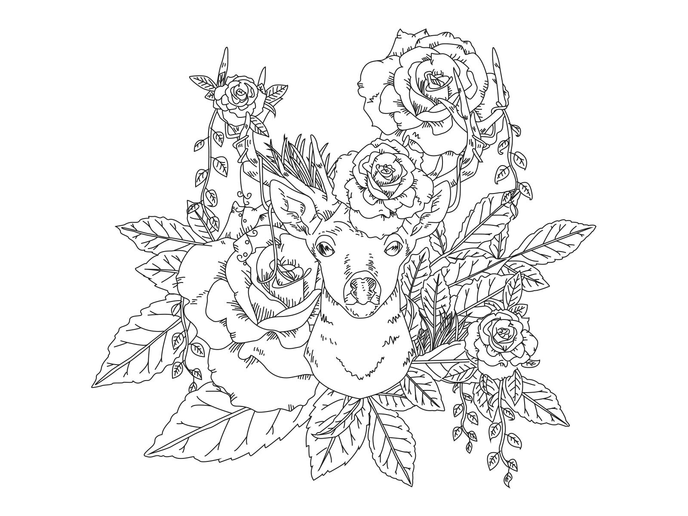
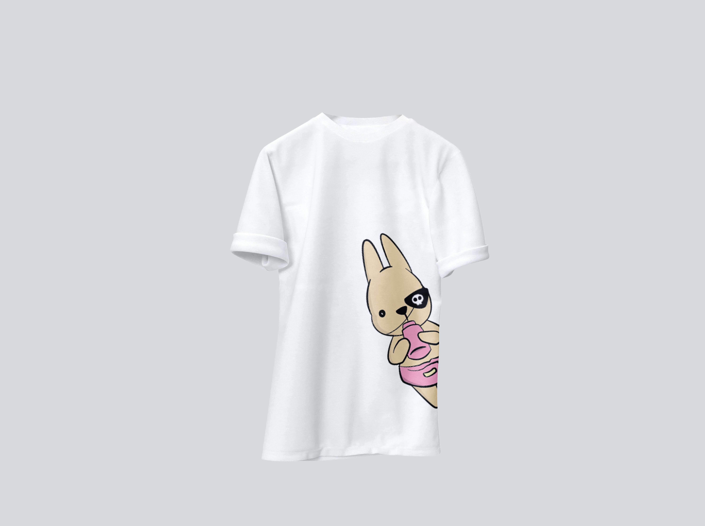
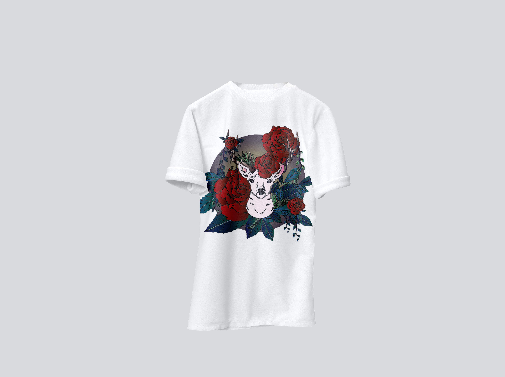
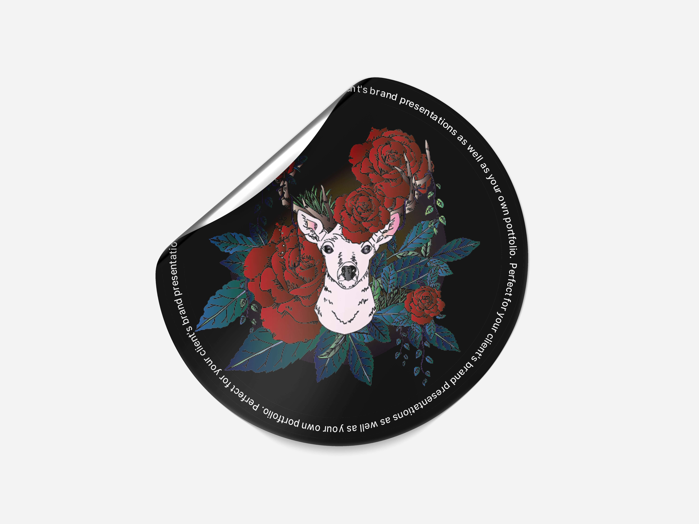
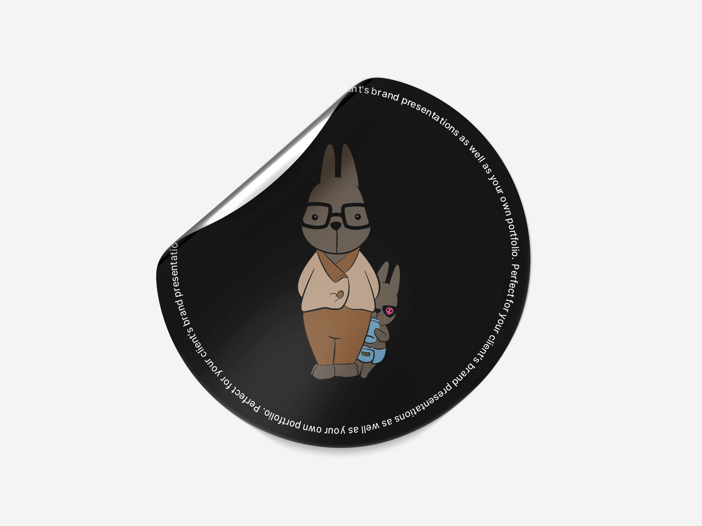

일러스트레이터로 사슴그리기
저번시간에 이어서 일러스트레이터를 이용해서 사슴을 그려보겠습니다.
마찬가지로 스케치 파일을 깔아놓고 펜툴을 이용해서 작업해주세요.
■ 꿀팁
채색은 그라데이션툴을 이용하면 저번토끼작업처럼 펜툴을 이용해서 명암작업하지 않아도 그럴듯한 명암효과를 낼 수 있답니다. 여러분도 써보세요🎨
그리고 펜툴 사용법에 대해 아주아주아주 1%정도만 사진으로 설명드릴게요. 오늘의 그림은 펜툴의 진행방향을
잘 컨트롤 하실 수 있어야 그림을 이쁘게 작업할 수 있거든요.
추가로 "채색까지 완료된 그림의 색상을 변경하고 싶은데 언제 다시 색칠하지...?"라는 고민을 품고 계시진 않았나요?
그런분들께 드리는 color guide기능이 있습니다. 아래 사진과 함께하시죠!

스케치 파일을 준비해주세요.

펜툴을 이용해서 열심히 따라 그려줍니다.
그리고 그라데이션툴을 이용해서 작업해보겠습니다~
완성된 그림입니다!
   

위는 목업이라는 걸 이용해서 저번시간에 만든 토끼와 함께 응용해본 예시에요! 전 개인적으로 간판이 맘에드네요. 밤비바에 놀러오세용 🍷